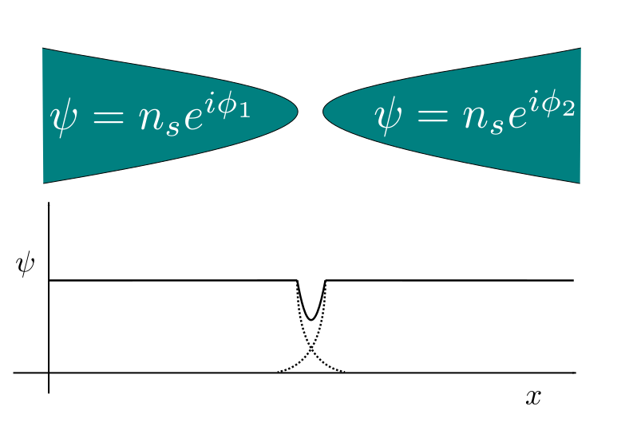
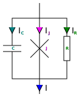

Introduction to Josephson Junctions
- Josephson junctions are weak links between two superconductors.
- They are used to create superconducting qubits, SQUIDs, and other devices.

Josephson Relations - I
- Current through a Josephson junction is given by $$I_s = I_c \sin(\delta)$$
- Here, $I_c$ is the critical current and $\delta$ is the phase difference between the superconductors ($\phi_1 - \phi_2$).

Josephson Relations - II
- Voltage across a Josephson junction is given by $$V = \frac{\Phi_0}{2\pi} \frac{d\delta}{dt}$$
- Here, $\Phi_0$ is the magnetic flux quantum. $$\Phi_0 = \frac{h}{2e} ~ 2.067\mathrm{x}10^{-15} Wb$$
The RCSJ Model
- Resistively and capacitively shunted junction model.
$$ \frac{\Phi_0}{2\pi}C \ddot{\delta} + \frac{\Phi_0}{2\pi R} \dot{\delta} = I-I_c\sin{\delta}$$
Rearranging, we get $$ \ddot{\delta}+\frac{1}{RC}\dot{\delta}=(\frac{2\pi}{C\Phi_{0}})(I-I_{c}\sin(\delta)) $$

The RCSJ Model
-
Rearranging, we get
$$ \ddot{\delta}+\frac{1}{RC}\dot{\delta}=(\frac{2\pi}{C\Phi_{0}})(I-I_{c}\sin(\delta)) $$
- dynamics of $\delta$ resembles a damped particle with
- Effective mass $C$
- Coefficient of friction $\frac{1}{R}$
- Potential on the particle $-(\frac{2\pi}{C\Phi_{0}})(I\delta-I_{c}\delta\sin(\delta))$
IV Characteristics
Rashba Edelstein Effect
- Interface effect between NM and HM.
- Generates a spin current perpendicular to the charge current.

Detection of Rashba-Edelstein Effect
- Interface effect $\implies$ Direct detection wasn't possible
Phase biasing of a Josephson junction using Rashba–Edelstein effect
- Part of Master's Thesis (2021)
- Prof Kartik Senapati, Superconductivity Lab, NISER, India.

Sample preparation
| Instrument | UV Mask Aligner |  DC Magnetron sputtering DC Magnetron sputtering |
Ga - FIB + SEM (Crossbeam 340) |
| Stage |  Photolithography Photolithography |
 Tri-layer deposition Tri-layer deposition |
 Final Sample Final Sample |
Junction Geometries
 |
 |
| Vertical Josephson Junction | Planar Josephson Junction |
Fabrication of device
|
SEM Image of the device
(With false colours indicating the layers)
Transport measurement
Josephson Junction characteristics measurements |